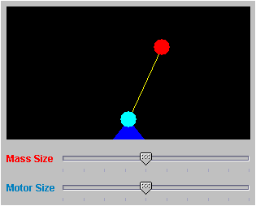
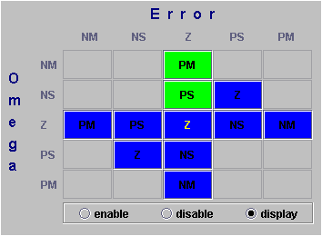
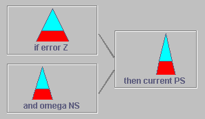
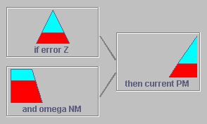
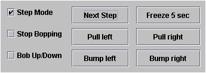

Fuzzy Pendulum Demo
This
demonstration of Fuzzy Logic has been created using the FuzzyJ Toolkit for the
Java(tm) Platform that was created by at the National Research Council of Canada. The code
for this demo is entirely Java(tm) code, although there is a capability to
create more sophisticated rule based expert systems in concert with Jess (Expert System Shell) from
Sandia National Laboratories (see the demo of the hybrid Java/Jess Fuzzy
Shower).
This is a reworking of an example originally created by Michelangelo Sebastiani in FLIPC. There was also a version we wrote for FuzzyCLIPS (using the version of wxClips that contains the FuzzyCLIPS extensions).
This is a demonstration of fuzzy logic control using a stationary inverted pendulum with a variable mass on the top of the pendulum and a variable strength motor on the bottom that will try to balance the pendulum. The demonstration is designed for "hands on" evaluation in order to see how fuzzy logic works. The user can manipulate the mass size, the motor size, and enable or disable any of the fuzzy rules that are used to control the pendulum balancing. The simulation can also be run in step mode. In the initial state of operation all of the rules are enabled, a yellow bopper rod will appear from the left and knock the mass to the right whenever the pendulum is balanced (within certain tolerances) and the mass will not be bobbing up and down. The actual running applet can be found at the bottom of this page.

The top right area shows the pendulum itself. The red bob at the top of the pendulum is the mass. The mass can be changed using the slider just below the pendulum graphic. The cyan colored ball at the bottom of the pendulum is a motor which, when given current, drives the pendulum one way or the other. The motor strength also can be changed using a slider located just below the pendulum graphic.

At the top left, in matrix format, we see the fuzzy logic rules that control the pendulum. Each element in the matrix corresponds to a rule. For example, the 3rd row, 1st column in the matrix can be read as:
IF Error is NM and Omega is Z
THEN set Current to PM
As the simulation runs, all of the rules represented at the matrix positions are considered for firing. If the inputs match well enough then the rule will fire. The contribution of each of the rules that fires is aggregated to determine a total output for the rule set. This is an inference cycle. When a rule fires in the knowledge base, the background of the matrix element corresponding to that rule is highlighted in green (as 2 of the rules are shown above). If the rule is disabled the background of the matrix area is set to a dark gray. If the rule is enabled but is not currently firing it is a blue color. In this example Error refers to the difference (in radians) between the angle of the pendulum and the upright position (PI/2). Omega is the angular velocity of the pendulum. The fuzzy terms are described by:
NM - negative medium
NS - negative small
ZE - zero
PS - positive small
PM - positive medium
To
enable or disable one of the 11 rules, select the appropriate radio button
below the matrix and then click on the rule in the matrix.
You may also notice that one of the labels of the rule conclusions is shown in yellow. Above, this is the Z at the Z,Z position of the matrix. This shows which of the 11 rules is selected to be displayed graphically below the matrix. This rule can be changed by first selecting the display radio button and then click on the rule in the matrix.

The area on the left below the rule matrix shows the output from each cycle of inferencing. Immediately below the matrix is the output of the rule selected for display. Above we show two examples of this display area. Each represents one of the 2 rules that have fired in the current inference cycle. The graphics show the shapes of the fuzzy sets that represents the terms of the antecedent parts of the rule and the conclusion part. The a cyan colored shape shows the fuzzy set for the rule part and the red overlay on this shape shows the degree of matching for that term, given the current state of the error and omega values.

Below the graphic for the displayed rule is the aggregated (global) result of the output from all of the rules that fired in the current inference cycle. In the case above we had 2 rules that fired and each produced a fuzzy out for the Current. The aggregation (union) of the 2 outputs is shown above. From this aggregated output we determine the crisp value for the next setting of the motor current by defuzzifying the global current output.

In the right middle section we display the values of error, omega and current as well as a graph that shows in strip chart format the most recent values of the current.

The final area of the simulation allows the user to control various aspects of the simulation. By selecting the Step Mode check box the simulation is switched into step mode and the Next Step Button is enabled. Clicking on this button will advance the simulation one time step, allowing the user to examine the effect of each inference cycle. Selecting the Freeze 5 Sec button will cause the simulation to pause for 5 seconds, enough time to look at the state of the system without going to step mode. By default the simulation will have a yellow rod come from the left and bop the mass whenever the pendulum is stable (balanced). This can be enabled or disabled by selecting the Stop Bopping check box. Also by default the mass does not bob up and down (as if the pendulum is a spring). This can be changed by setting the Bob Up/Down check box. Finally the user can cause the mass to be pulled all the way to the right or all the way to the left or just given a slight bump to the left or right with the appropriate buttons.
The
simulation applet should appear below. Note that your browser MUST be set up to
use JFC/Swing 1.1.1 or later. This may require that your classpath
environment variable be set to include the required jar file (swingall.jar).